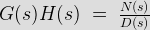
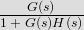
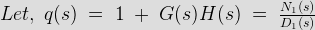
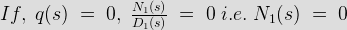

The stability analysis of a feedback control system is based on identifying the location of the roots of the characteristic equation on s-plane. The system is stable if the roots lie on left hand side of s-plane. Relative stability of a system can be determined by using frequency response methods like Nyquist plot and Bode plot. Nyquist criterion is used to identify the presence of roots of a characteristic equation in a specified region of s-plane. To understand Nyquist plot we need to know about some of the terminologies .
Contour : Closed path in a complex plane is called contour
Nyquist path or Nyquist contour
The Nyquist contour is a closed contour in the s-plane which completely encloses the entire right hand half of s-plane. In order to enclose the complete RHS of s-plane a large semicircle path is drawn with diameter along jω axis and centre at origin. The radius of the semicircle is treated as infinity.
Nyquist Encirclement
A point is said to be encircled by a contour if it is found inside the contour.
Nyquist Mapping
The process by which a point in s-plane transformed into a point in F(s) plane is called mapping and F(s) is called mapping function.
Steps of drawing the Nyquist path
• Step 1 - Check for the poles of G(s) H(s) of jω axis including that at origin.
• Step 2 – Select the proper Nyquist contour – a) Include the entire right half of s-plane by drawing a semicircle of radius R with R tends to infinity.
• Step 3 – Identify the various segments on the contour with reference to Nyquist path
• Step 4 – Perform the mapping segment by segment substituting the equation for respective segment in the mapping function. Basically we have to sketch the polar plots of the respective segment.
• Step 5 - Mapping of the segments are usually mirror images of mapping of respective path of +ve imaginary axis.
• Step 6 - The semicircular path which covers the right half of s plane generally maps into a point in G(s) H(s) plane.
• Step 7- Interconnect all the mapping of different segments to yield the required Nyquist diagram.
• Step 8 – Note the number of clockwise encirclement about (-1, 0) and decide stability by N = Z – P

is the Open loop transfer function (O.L.T.F)

is the Closed loop transfer function (C.L.T.F)
N(s) = 0 is the open loop zero and D(s) is the open loop pole
From stability point of view no closed loop poles should lie in the RH side of s-plane . Characteristics equation 1 + G(s) H(s) = 0 denotes closed loop poles .

Now as 1+ G(s) H(s) = 0 hence q(s) should also be zero.

Therefore , from the stability point of view zeroes of q(s) should not lie in RHP of s-plane.
To define the stability entire RHP (Right Hand Plane) is considered. We assume a semicircle which encloses all points in the RHP by considering the radius of the semicircle R tends to infinity. [R → ∞].
The first step to understand the application of Nyquist criterion in relation to determination of stability of control systems is mapping from s-plane to G(s) H(s) - plane. s is considered as independent complex variable and corresponding value of G(s) H(s) being the dependent variable plotted in another complex plane called G(s) H(s) - plane. Thus for every point in s-plane there exists a corresponding point in G(s) H(s) - plane. During the process of mapping the independent variable s is varied along a specified path in s - plane and the corresponding points in G(s)H(s) plane are joined. This completes the process of mapping from s-plane to G(s)H(s) - plane.
Nyquist stability criterion says that N = Z - P where N is the total no. of encirclement about the origin, P is the total no. of poles and Z is the total no. of zeroes .
Case 1:- N = 0 (no encirclement), so Z = P = 0 & Z = P
If N = 0, P must be zero therefore system is stable.
Case 2:- N > 0 (clockwise encirclement), so P = 0 , Z ≠0 & Z > P
For both cases system is unstable.
Case 3 :- N < 0 (counterclockwise encirclement), so Z = 0, P ≠0 & P > Z
System is stable.
 by
by